Kit Arduino OPERACIONAL
Categoria: Equipamento e PráticasNavegação da Apostila
Selecione um dos módulos abaixo para acessar a introdução, conceitos teóricos e roteiros de práticas da apostila do Kit Arduino:
Apresentação
O Laboratório de Arduino do Instituto Federal do Espírito Santo (IFES) – Campus Viana foi concebido para proporcionar aos estudantes uma aprendizagem prática em programação, eletrônica e automação.
Esta apostila foi desenvolvida para acompanhar as atividades realizadas em laboratório, apresentando os conceitos fundamentais do Arduino de forma gradual, permitindo que alunos sem experiência prévia consigam desenvolver projetos reais.
Ao longo das práticas serão utilizados sensores, atuadores, displays, motores e diversos componentes eletrônicos, sempre relacionando teoria e prática.
Objetivos
Ao concluir esta apostila, espera-se que o estudante seja capaz de:
- Conhecer a plataforma Arduino;
- Compreender conceitos básicos de eletrônica;
- Desenvolver programas simples utilizando a IDE Arduino;
- Montar circuitos em protoboard;
- Utilizar sensores e atuadores;
- Desenvolver pequenos projetos de automação.
💡 DICA: Esta apostila foi elaborada para alunos iniciantes. Não é necessário possuir conhecimentos prévios em programação ou eletrônica. Cada prática introduzirá novos conceitos de forma gradual.
⚠️ ATENÇÃO: A programação e a eletrônica são aprendidas principalmente por meio da prática. Leia a teoria, monte o circuito, execute o experimento, teste modificações e registre suas observações. Errar faz parte do processo de aprendizagem.
Normas de Segurança
Durante as atividades práticas, siga as seguintes recomendações:
- Nunca monte ou altere circuitos com a placa energizada.
- Verifique a posição correta dos componentes antes de ligar o circuito.
- Evite curto-circuitos entre os pinos da placa.
- Utilize apenas cabos e componentes fornecidos pelo laboratório.
- Em caso de dúvidas, solicite auxílio ao professor.
- Mantenha a bancada organizada durante toda a prática.
Materiais Utilizados no Laboratório
Durante as práticas serão utilizados diversos componentes, entre eles:
- Arduino Uno;
- Protoboard;
- Jumpers;
- LEDs;
- Resistores;
- Botões;
- Potenciômetros;
- Sensores;
- Displays LCD;
- Servo motor;
- Cabos USB.
O que é o Arduino?
O Arduino é uma plataforma de prototipagem eletrônica de código aberto (open-source), projetada para tornar a criação de projetos interativos mais acessível para estudantes, artistas, hobbistas e profissionais.
Muitas vezes, quando falamos "Arduino", estamos nos referindo a duas coisas que trabalham juntas: o Hardware (a placa física) e o Software (o programa usado no computador).
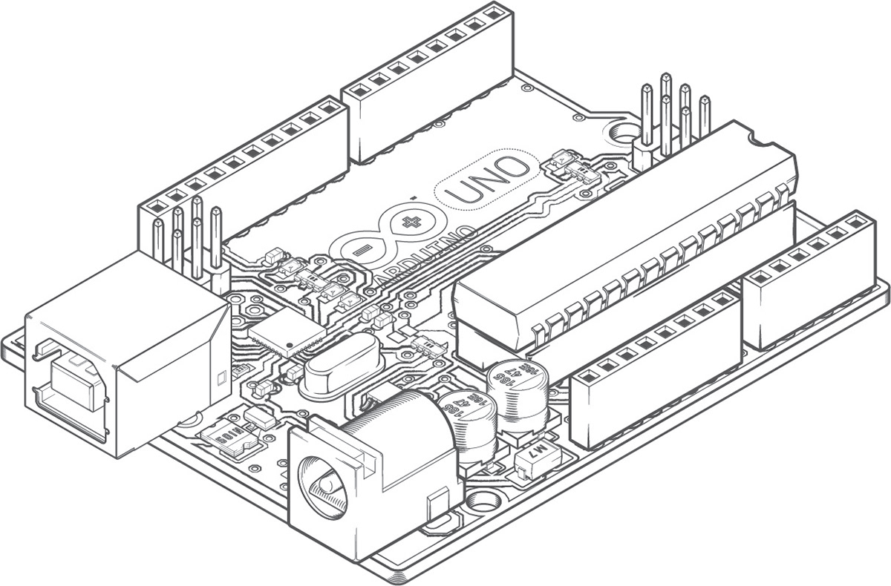
Figura: Principais componentes da placa Arduino Uno.
1. O Hardware (A Placa)
A placa Arduino funciona como o "cérebro" do seu projeto. Ela possui um pequeno chip chamado microcontrolador, que é capaz de ler informações do mundo real (através de sensores) e tomar decisões para controlar outros componentes (como ligar um motor ou acender um LED).
- Pinos de Entrada (Sensores): Permitem que o Arduino "sinta" o ambiente, como medir a temperatura, detectar luz ou saber se um botão foi pressionado.
- Pinos de Saída (Atuadores): Permitem que o Arduino interaja com o ambiente, emitindo sons, gerando movimento ou acendendo luzes.
2. O Software (A IDE)
O hardware sozinho não faz nada sem instruções. É aqui que entra o Software (conhecido como Arduino IDE). É um programa de computador gratuito onde você escreve o código (chamado de sketch). Após escrever as instruções, você conecta a placa ao computador via cabo USB e transfere o código para o Arduino. A partir desse momento, a placa guardará as instruções na memória e poderá funcionar até mesmo desconectada do computador, bastando ligá-la a uma bateria ou fonte de energia.
💡 Por que o Arduino é tão popular? A grande vantagem do Arduino é a sua comunidade. Por ser um projeto de código aberto, existem milhares de tutoriais, bibliotecas gratuitas e peças (módulos) prontas no mercado, facilitando a criação de qualquer ideia, desde um termômetro caseiro até um robô autônomo.
Módulo 1: Primeiros Passos com o Arduino
Prática 1: Controlando o LED Integrado (Blink)
O experimento Blink é considerado o equivalente ao "Olá, Mundo!" dos sistemas embarcados. O objetivo desta etapa inicial é familiarizar-se com o ambiente de programação (Arduino IDE), entender a estrutura básica de um código e testar a comunicação entre o computador e a placa, acendendo o LED interno.
🎯 Objetivos & Competências
- Conhecer e configurar a Arduino IDE.
- Identificar os principais componentes físicos do Arduino Uno.
- Compreender a função estrutural do
setup()e doloop(). - Controlar saídas digitais alternando entre
HIGHeLOW.
🧰 Materiais Necessários
- Placa Arduino Uno;
- Cabo USB Tipo A/B;
- Computador com Arduino IDE instalada.
* Não é necessária protoboard ou circuito externo nesta prática.
Conhecendo a Placa e o Ambiente
Antes de programar, precisamos identificar os componentes essenciais da placa e configurar o nosso ambiente de desenvolvimento de software (IDE).
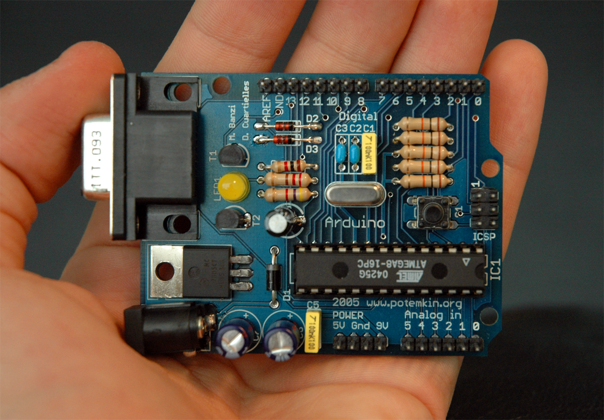
Passo a passo da configuração:
- Conecte o Arduino ao computador utilizando o cabo USB.
- Abra o software Arduino IDE.
- Acesse o menu superior
Ferramentas > Placae selecione Arduino Uno. - Acesse o menu
Ferramentas > Portae selecione a porta COM correspondente ao seu Arduino (ex: COM3, COM4).
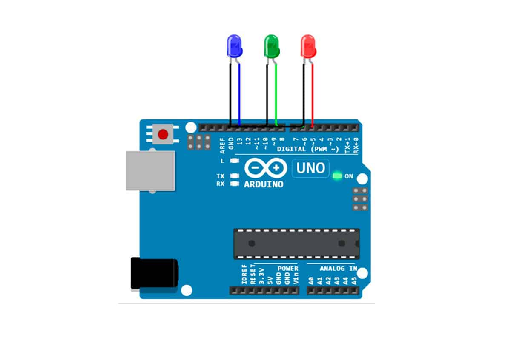
Código da Prática: Blink
// Configura o pino do LED embutido como SAÍDA (OUTPUT)
pinMode(LED_BUILTIN, OUTPUT);
}
void loop() {
digitalWrite(LED_BUILTIN, HIGH); // Liga o LED aplicando 5V
delay(1000); // Aguarda 1000 milissegundos (1 segundo)
digitalWrite(LED_BUILTIN, LOW); // Desliga o LED removendo a tensão (0V)
delay(1000); // Aguarda 1000 milissegundos
}
Prática 2: LED Externo e Protoboard
Na prática anterior foi utilizado o LED integrado à placa Arduino Uno, permitindo compreender a estrutura básica de um programa e o funcionamento das funções setup(), loop(), pinMode(), digitalWrite() e delay().
Nesta prática será dado um passo além: o LED será conectado externamente utilizando uma protoboard. Durante a atividade, serão apresentados conceitos fundamentais de eletrônica, como polaridade dos componentes, utilização de resistores e montagem de circuitos simples. Ao final desta prática, o estudante será capaz de montar seu primeiro circuito eletrônico utilizando o Arduino.
🎯 Objetivos & Competências
- Conhecer a protoboard e montar circuitos simples nela.
- Identificar os terminais (polaridade) de um LED.
- Compreender a função e utilizar resistores para proteção.
- Controlar dispositivos externos por meio das portas digitais.
Conceitos Fundamentais
Conhecendo a Protoboard
A protoboard é uma matriz de contatos utilizada para montar circuitos eletrônicos sem a necessidade de soldagem, facilitando testes e correções. Embora os furos pareçam independentes, internamente diversos deles estão interligados por trilhas metálicas. Nas laterais, existem barramentos para distribuição de energia: um para o potencial positivo (+5 V, linhas vermelhas) e outro para o potencial negativo (GND, linhas pretas). As linhas azuis realizam o contato elétrico entre os componentes e são isoladas entre si.
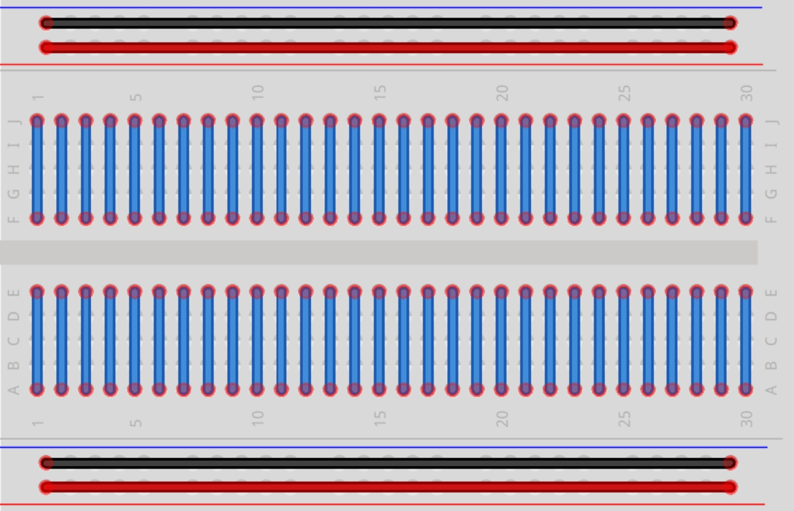
Polaridade do LED
O LED possui dois terminais: o Ânodo (terminal positivo) e o Cátodo (terminal negativo). Para funcionar corretamente, o LED deve ser conectado respeitando sua polaridade; caso seja ligado invertido, ele simplesmente não acenderá.
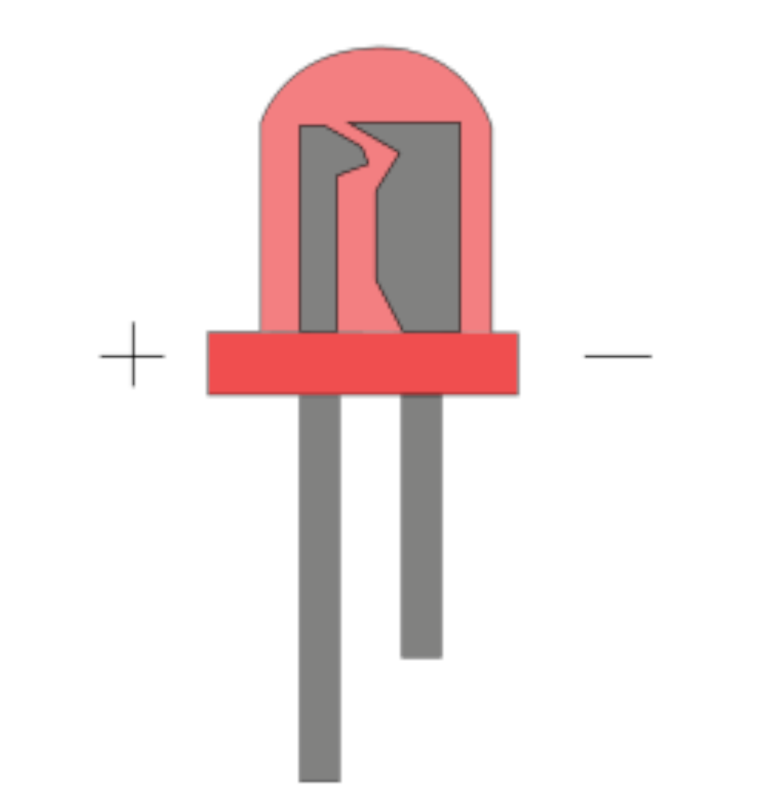
O Resistor e o Código de Cores
O resistor regula e limita o fluxo da corrente elétrica em um circuito. Os LEDs não podem ser ligados diretamente à alimentação da placa, pois a corrente pode ultrapassar o valor suportado e queimar o componente. Nesta prática utilizaremos um resistor de 220 Ω em série com o LED.
Os valores são indicados por faixas coloridas. O resistor de 220 Ω possui as faixas: Vermelho – Vermelho – Marrom – Dourado. As duas primeiras indicam os algarismos (vermelho = 2), a terceira é o multiplicador (marrom = 10) e a quarta é a tolerância (dourado = ±5%). Cálculo: 22 × 10 = 220 Ω.
| Cor | Valor | Multiplicador | Tolerância |
|---|---|---|---|
| Preto | 0 | x10^0 | - |
| Marrom | 1 | x10^1 | ±1% |
| Vermelho | 2 | x10^2 | ±2% |
| Laranja | 3 | x10^3 | - |
| Amarelo | 4 | x10^4 | - |
| Verde | 5 | x10^5 | ±0,5% |
| Azul | 6 | x10^6 | ±0,25% |
| Violeta | 7 | x10^7 | ±0,1% |
| Cinza | 8 | x10^8 | ±0,05% |
| Branco | 9 | x10^9 | - |
| Ouro | - | x10^-1 | ±5% |
| Prata | - | x10^-2 | ±10% |
Tabela 2: Código de cores para resistores.
Esquema e Montagem do Circuito
Realize as conexões da seguinte maneira:
- Conecte o terminal positivo (ânodo) do LED ao resistor.
- Ligue o resistor ao pino digital 13 do Arduino.
- Conecte o terminal negativo (cátodo) do LED ao barramento GND da protoboard.
- Conecte o barramento GND da protoboard ao pino GND do Arduino.
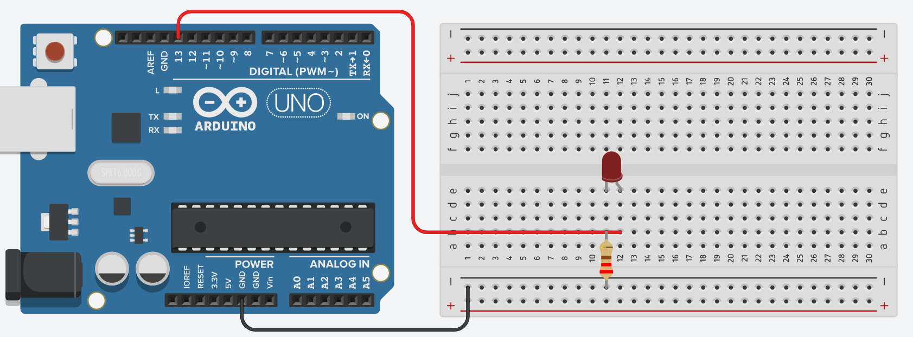
Código da Prática
Neste código, a principal novidade é o uso de uma variável para representar o pino. A instrução const int LED = 13; cria uma constante. Assim, o Arduino entende que "LED" significa o pino 13, organizando melhor o código.
void setup() {
pinMode(LED, OUTPUT);
}
void loop() {
digitalWrite(LED, HIGH);
delay(1000);
digitalWrite(LED, LOW);
delay(1000);
}
Dica: O LED interno da placa também está ligado ao pino digital 13. Ao executar o programa, você verá os dois LEDs (interno e externo) piscando simultaneamente.
🧪 Experimentando o código
- Faça o LED permanecer aceso por 2 segundos e apagado por 2 segundos.
- Faça o LED piscar rapidamente com intervalo de 200 ms.
- Faça o LED permanecer aceso por 3 segundos e apagado por 500 ms.
- Teste outros valores na função
delay()e observe a velocidade.
🏆 Desafio Prático
Desenvolva um programa executando a sequência continuamente:
- Acenda o LED por 1 segundo;
- Apague o LED por 500 ms;
- Acenda novamente por 200 ms;
- Apague por 2 segundos e reinicie.
❓ Questões de Fixação
- Qual é a função do resistor no circuito?
- O que aconteceria se o LED fosse conectado invertido?
- Por que o resistor deve ser ligado em série com o LED?/li>
- Qual a função do pino GND?
- Qual a diferença entre o LED integrado da placa e o LED utilizado nesta prática?
- O que acontece quando o comando
digitalWrite(LED, HIGH);é executado?
Módulo 2: Sensores e Controle de Sinais
Prática 3: Entradas Digitais com Push Button
Nas práticas anteriores, o Arduino foi utilizado apenas para acionar saídas (LEDs). Nesta prática, faremos a placa ler informações do ambiente externo por meio de um botão (push button), utilizando estruturas condicionais para tomar decisões no código.
🎯 Objetivos & Competências
- Compreender o funcionamento de uma entrada digital.
- Aprender a ler o estado de um pino com
digitalRead(). - Entender o conceito de resistor de Pull-Down.
- Utilizar condicionais
if / elsena lógica do programa.
🧰 Materiais Necessários
- Placa Arduino Uno e Cabo USB;
- Protoboard e Jumpers;
- 1x Push Button (Botão de pressão);
- 1x Resistor de 10 kΩ (Pull-Down);
- 1x LED de 5mm e 1x Resistor de 220 Ω.
Conceitos Fundamentais
O Push Button e o Resistor de Pull-Down
O push button é uma chave táctil de contato momentâneo. Quando o pino do Arduino fica desconectado ("flutuando"), o circuito absorve ruídos elétricos, gerando leituras incertas. Para evitar isso, utilizamos um resistor de Pull-Down (10 kΩ) ligado ao GND, garantindo nível lógico LOW (0V) quando o botão está solto, e HIGH (5V) ao ser pressionado.
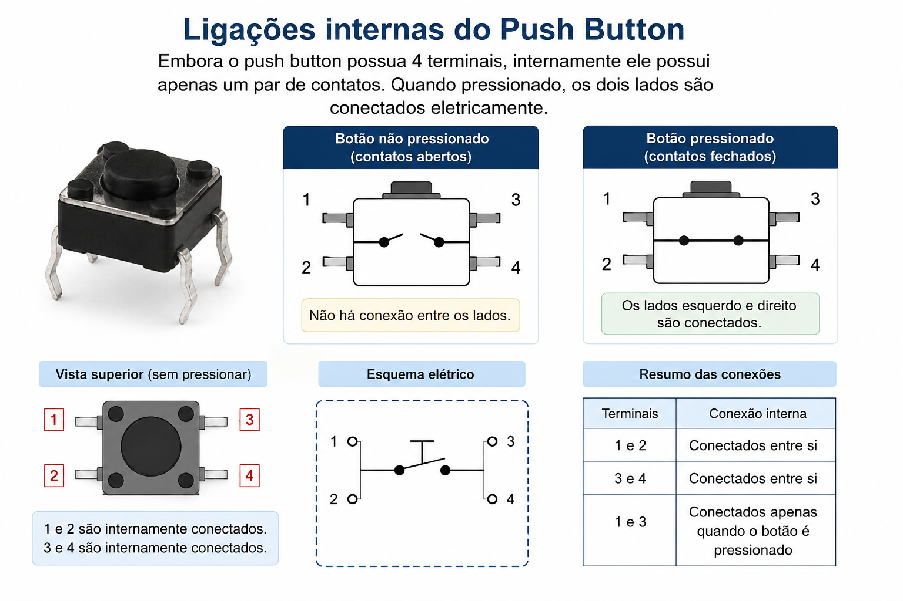
Figura 1: Funcionamento do resistor de Pull-Down no circuito do botão.
Esquema e Montagem do Circuito
- Conecte um terminal do botão ao pino 5V do Arduino.
- Conecte o outro terminal do botão ao pino digital 2 e, no mesmo ponto, ligue o resistor de 10 kΩ ao GND.
- Ligue o LED no pino digital 8 através do resistor de 220 Ω.
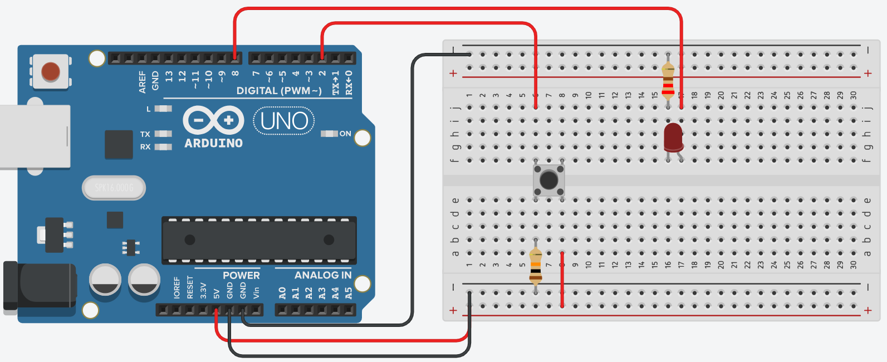
Código da Prática
const int pinoLED = 8;
void setup() {
pinMode(pinoBotao, INPUT);
pinMode(pinoLED, OUTPUT);
}
void loop() {
if (digitalRead(pinoBotao) == HIGH) {
digitalWrite(pinoLED, HIGH); // Liga o LED ao pressionar
} else {
digitalWrite(pinoLED, LOW); // Desliga o LED ao soltar
}
}
🧪 Experimentando o código
- Inverta a lógica: faça o LED permanecer aceso e apagar quando o botão for pressionado.
- Adicione um segundo LED que acende no estado oposto ao primeiro.
🏆 Desafio Prático
Crie um sistema "liga/desliga" estilo interruptor: um clique no botão acende o LED e ele permanece aceso; outro clique apaga o LED.
❓ Questões de Fixação
- O que é o efeito de pino "flutuante" (floating) nas entradas digitais?
- Qual a diferença conceitual entre uma configuração Pull-Down e Pull-Up?
- Qual é a função do comando
digitalRead()?
Prática 4: Entradas Analógicas com Potenciômetro
Sinais digitais possuem apenas dois estados (0 V ou 5 V). No entanto, o mundo real é analógico e varia continuamente. Nesta prática, utilizaremos o conversor analógico-digital (ADC) do Arduino para ler a variação de tensão enviada por um potenciômetro e monitorar esses dados via Monitor Serial.
🎯 Objetivos & Competências
- Diferenciar sinais digitais e sinais analógicos.
- Utilizar o conversor ADC de 10 bits do Arduino.
- Efetuar leituras com a função
analogRead(). - Transmitir dados para o PC utilizando a Comunicação Serial (UART).
🧰 Materiais Necessários
- Placa Arduino Uno e Cabo USB;
- Protoboard e Jumpers;
- 1x Potenciômetro de 10 kΩ;
- Computador com Arduino IDE.
Conceitos Fundamentais
Entrada Analógica e Resolução do ADC
O Arduino Uno possui 6 portas analógicas (A0 a A5) conectadas a um conversor A/D de 10 bits. Isso significa que ele mapeia a tensão de entrada (0 a 5 V) em uma escala inteira que vai de 0 até 1023 (210 = 1024 níveis).
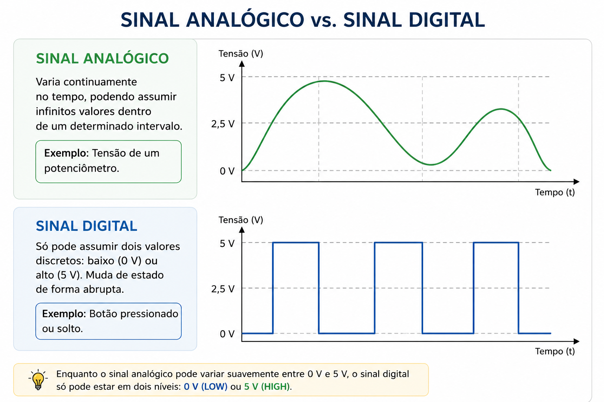
Esquema e Montagem do Circuito
- Conecte um dos terminais externos do potenciômetro ao 5V.
- Conecte o outro terminal externo ao GND.
- Conecte o terminal central (cursor) ao pino analógico A0.
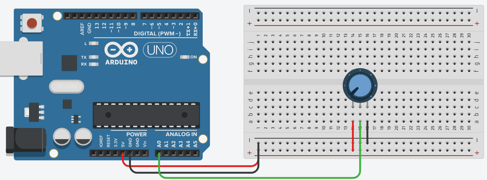
Código da Prática
int valorLido = 0;
void setup() {
Serial.begin(9600); // Inicializa comunicação serial a 9600 baud rate
}
void loop() {
valorLido = analogRead(pinoPot); // Lê valor de 0 a 1023
Serial.println(valorLido); // Imprime valor no Monitor Serial
delay(100);
}
🧪 Experimentando o código
- Abra o Plotter Serial (Ferramentas > Plotter Serial) na IDE para visualizar um gráfico da rotação do eixo em tempo real.
- Calcule a tensão em Volts no programa multiplicando a leitura por
(5.0 / 1023.0)e imprima em volts.
🏆 Desafio Prático
Programe um alarme visual: se a leitura do potenciômetro ultrapassar o valor 800, faça um LED piscar como alerta.
❓ Questões de Fixação
- Por que os pinos analógicos não exigem declaração na função
pinMode()? - O que representa o valor 512 lido na porta analógica A0?
Prática 5: Controlling LED Brightness com PWM
Nesta prática, integraremos a leitura analógica do potenciômetro com o conceito de PWM (Pulse Width Modulation). O objetivo é variar proporcionalmente a intensidade luminosa de um LED conforme o movimento do potenciômetro.
🎯 Objetivos & Competências
- Compreender o funcionamento da técnica PWM.
- Identificar os pinos PWM no Arduino (assinalados com
~). - Utilizar a função
analogWrite()para saídas "analógicas". - Utilizar a função
map()para adequação de escalas.
🧰 Materiais Necessários
- Placa Arduino Uno e Cabo USB;
- Protoboard e Jumpers;
- 1x Potenciômetro de 10 kΩ;
- 1x LED de 5mm e 1x Resistor de 220 Ω.
Conceitos Fundamentais
Pulse Width Modulation (PWM) e Função map()
O PWM simula uma tensão analógica alternando o sinal entre HIGH e LOW em alta frequência. A função analogWrite() aceita valores de 8 bits (0 a 255). Como a leitura analógica retorna de 0 a 1023 (10 bits), utilizamos a função map() para converter a faixa de entrada na faixa de saída proporcional.
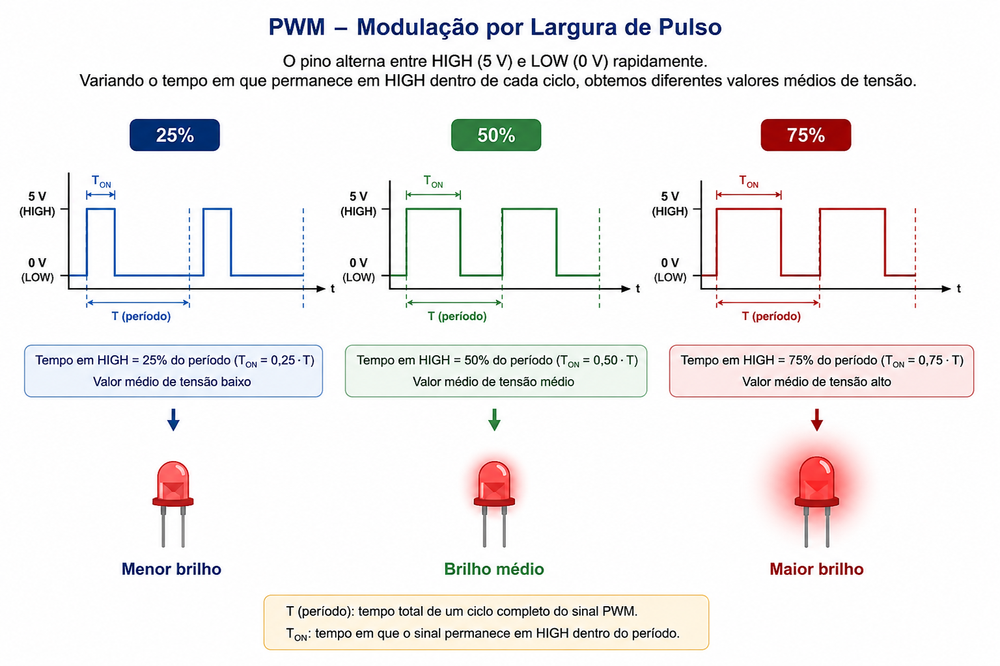
| Entrada (analogRead) | Saída Mapeada (analogWrite) | Estado do LED |
|---|---|---|
| 0 | 0 | Apagado (0%) |
| 512 | 128 | Brilho Médio (50%) |
| 1023 | 255 | Brilho Máximo (100%) |
Esquema e Montagem do Circuito
- Mantenha o potenciômetro conectado ao pino A0.
- Conecte o LED ao pino digital 9 (porta habilitada para PWM
~9).
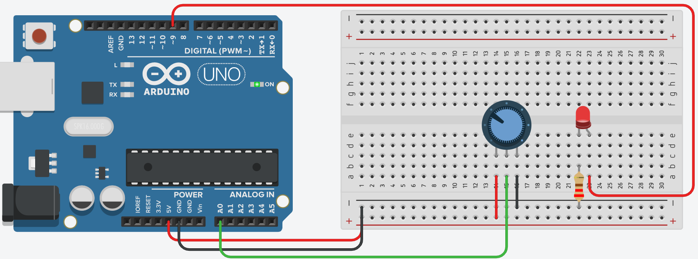
Código da Prática
const int pinoLED = 9; // Pino PWM com ~
void setup() {
pinMode(pinoLED, OUTPUT);
}
void loop() {
int valorEntrada = analogRead(pinoPot);
int valorSaida = map(valorEntrada, 0, 1023, 0, 255);
analogWrite(pinoLED, valorSaida);
}
🧪 Experimentando o código
- Substitua a instrução
map()por uma divisão simplesvalorEntrada / 4e observe o resultado.
🏆 Desafio Prático
Crie um efeito de escuridão invertida: quanto mais você gira o potenciômetro para a direita, menor fica o brilho do LED (de 100% até apagar).
❓ Questões de Fixação
- O que aconteceria se você ligasse o LED no pino digital 8 e tentasse usar a função
analogWrite()? - Sintaticamente, quais são os 5 parâmetros exigidos pela função
map()?
Módulo 3: Automações e Interfaces
Prática 6: Sensor LDR (Estrutura Condicional)
Nesta prática, utilizaremos um LDR (Light Dependent Resistor) para desenvolver um sistema simples de iluminação automática. O objetivo é permitir que o Arduino perceba a intensidade luminosa do ambiente ao seu redor por meio de uma leitura analógica e, utilizando estruturas condicionais, tome a decisão de acender ou apagar um LED de forma automática.
🎯 Objetivos & Competências
- Conhecer o funcionamento do sensor LDR e interpretar valores obtidos por sensores analógicos.
- Compreender o princípio de funcionamento e montar um circuito utilizando um divisor de tensão.
- Utilizar estruturas condicionais (if/else) em programas para o Arduino tomar decisões.
- Desenvolver aplicações capazes de responder automaticamente às condições do ambiente.
🧰 Materiais Necessários
- Placa Arduino Uno e Cabo USB;
- Protoboard e Jumpers;
- 1x Sensor de luminosidade (LDR);
- 1x Resistor de 10 kΩ;
- 1x LED de 5mm;
- 1x Resistor de 220 Ω.
Conceitos Fundamentais
Divisor de Tensão e Estruturas Condicionais
O LDR altera sua resistência elétrica quando exposto à luz: em ambientes muito iluminados a resistência é baixa, e no escuro ela aumenta consideravelmente. Como as entradas analógicas do Arduino medem apenas tensão (entre 0 V e 5 V), é necessário montar um divisor de tensão usando o LDR em série com um resistor de 10 kΩ. A variação da resistência do LDR causa uma variação proporcional na tensão, que é lida pelo pino A0. Em seguida, a estrutura condicional if avalia se o valor lido ultrapassa um limite pré-determinado (ex: 400) para acender ou apagar o LED.
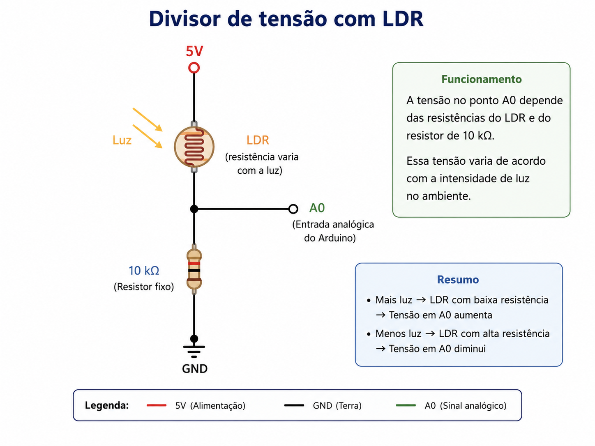
Figura 1: Funcionamento divisor de tensão LDR.
Esquema e Montagem do Circuito
- Conecte um terminal do LDR ao barramento de 5 V da protoboard.
- Conecte o outro terminal do LDR ao pino A0 do Arduino.
- Ligue um resistor de 10 kΩ entre o pino A0 e o barramento GND, formando o divisor de tensão.
- Conecte um resistor de 220 Ω entre o pino digital 8 e o ânodo do LED.
- Ligue o cátodo do LED ao barramento GND.
- Conecte os barramentos da protoboard aos pinos 5 V e GND do Arduino.
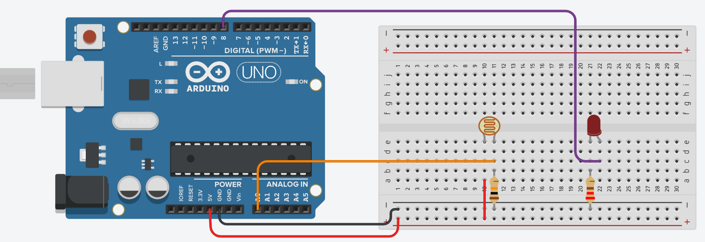
Código da Prática
void setup() {
Serial.begin(9600);
pinMode(LED, OUTPUT);
}
void loop() {
int LDR = analogRead(A0);
Serial.println(LDR);
if (LDR > 400) {
digitalWrite(LED, HIGH);
} else {
digitalWrite(LED, LOW);
}
delay(500);
}
🧪 Experimentando o código
- Cubra completamente o sensor LDR utilizando a mão e veja a reação do circuito.
- Ilumine diretamente o sensor utilizando a lanterna de um celular.
- Altere o valor da condição de 400 para 200 e observe a diferença no acionamento do LED.
- Em seguida, altere esse valor limite para 700 e compare os resultados.
- Observe como os valores numéricos apresentados no Monitor Serial variam conforme a intensidade luminosa.
🏆 Desafio Prático
Em vez de acender o LED quando houver muita luz, altere a lógica (a condição do if) para que ele acenda apenas quando o ambiente estiver escuro.
❓ Questões de Fixação
- Qual é a função do sensor LDR no circuito?
- Por que é necessário utilizar um divisor de tensão neste circuito com o Arduino?
- Qual é a faixa de valores retornada pela função analogRead()?
- Qual é a finalidade da estrutura condicional if utilizada neste programa?
- O que acontece com o comportamento do sistema se o valor de referência utilizado na comparação for alterado?
Prática 7: Display LCD (Comunicação I2C)
Nesta prática será utilizado um display LCD 16×2 com interface I²C, permitindo exibir textos, números e mensagens em tempo real sem a necessidade do Monitor Serial. Além disso, será apresentado um novo protocolo de comunicação bastante utilizado em sistemas embarcados: o barramento I²C
🎯 Objetivos & Competências
- Conhecer o funcionamento do display LCD 16×2.
- Compreender a comunicação I²C.
- Aprender a utilizar bibliotecas no Arduino.
- Exibir mensagens em um display LCD.
- Integrar um novo dispositivo ao Arduino.
🧰 Materiais Necessários
- Placa Arduino Uno e Cabo USB;
- Protoboard;
- 4x Jumpers;
- Display LCD 16×2 com interface I²C;
Conceitos Fundamentais
Visor de mensagens e informações
O display LCD 16x2 é um visor de cristal líquido capaz de exibir até 32 caracteres distribuídos em duas linhas de 16 colunas sem depender do Monitor Serial. Para evitar o uso excessivo de pinos do Arduino, utiliza-se um módulo I²C, que converte a comunicação paralela em serial e reduz as conexões para apenas quatro fios: alimentação (VCC/GND), dados (SDA) e sincronismo (SCL). Nesse protocolo de comunicação mestre-escravo, o Arduino gerencia a transmissão dos dados com auxílio das bibliotecas Wire.h e LiquidCrystal_I2C.h, utilizando comandos específicos como lcd.setCursor() e lcd.print() para posicionar e exibir mensagens na tela de forma simples e eficiente.
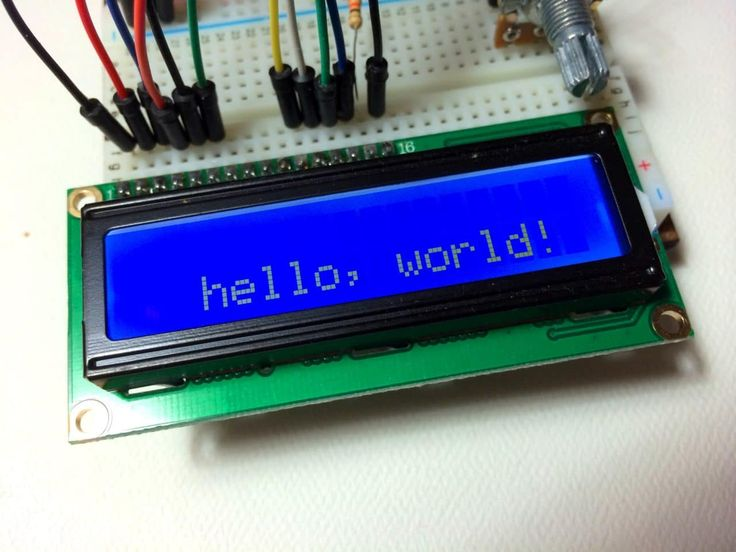
Figura 1: Funcionamento display.
Esquema e Montagem do Circuito
- Conecte o pino VCC do módulo ao pino 5 V do Arduino.
- Conecte o pino GND ao pino GND do Arduino.
- Conecte o pino SDA ao pino A4.
- Conecte o pino SCL ao pino A5.
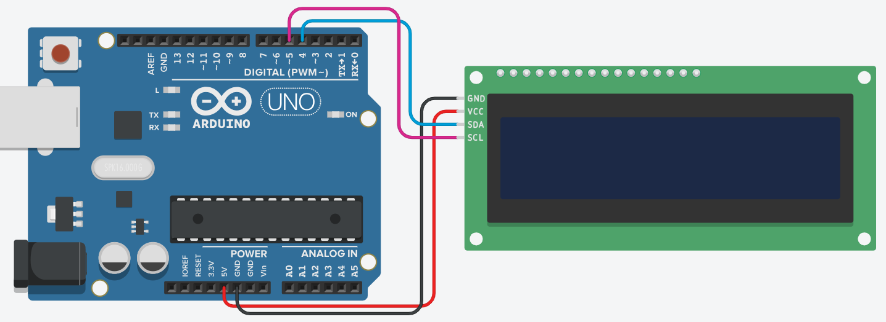
Código da Prática
LiquidCrystal_I2C lcd(0x20, 16, 2);
void setup() {
lcd.init();
lcd.clear();
lcd.backlight();
lcd.setCursor(0,0);
lcd.print("Ola, mundo!");
lcd.setCursor(0,1);
lcd.print("Arduino + LCD");
}
void loop() {
}
🧪 Experimentando o código
- Altere o texto exibido na primeira linha para o seu nome.
- Modifique a mensagem da segunda linha para o nome do seu curso ou disciplina.
- Utilize diferentes valores na função setCursor() e observe como a posição do texto é alterada.
- Escreva uma mensagem com mais de 16 caracteres e observe o comportamento do display.
- Utilize o comando lcd.clear() antes de escrever uma nova mensagem e observe o resultado.
🏆 Desafio Prático
Modifique o programa para que o display apresente três mensagens diferentes.Exiba a primeira mensagem durante dois segundos, limpe a tela e apresente uma segunda mensagem por mais dois segundos. Em seguida, exiba uma terceira mensagem.
❓ Questões de Fixação
- O que significa a sigla LCD?
- O que representa a nomenclatura 16×2?
- Qual é a principal vantagem da utilização do módulo I²C?
- Quais são as funções dos pinos SDA e SCL?
- Qual comando é utilizado para posicionar o cursor no display?
Prática 8: Servo Motor (Controle de posição)
Nesta prática será apresentado o servo motor SG90, um dos modelos mais utilizados em projetos educacionais com Arduino.Para esse tipo de aplicação utiliza-se o servo motor, um dispositivo capaz de girar para um ângulo específico e permanecer nessa posição enquanto estiver energizado.
🎯 Objetivos & Competências
- Compreender o funcionamento de um servo motor;
- Diferenciar um servo motor de um motor DC convencional;
- Utilizar a biblioteca Servo.h;
- Controlar o ângulo de rotação de um servo motor;
- Desenvolver programas que posicionem o servo em diferentes ângulos.
🧰 Materiais Necessários
- Placa Arduino Uno e Cabo USB;
- Servo motor SG90;
- 3x Jumpers;
Conceitos Fundamentais
O motor giratório
O servo motor é um atuador eletromecânico desenvolvido para realizar movimentos angulares com elevada precisão. Diferentemente de um motor DC convencional, que gira continuamente enquanto recebe alimentação elétrica, o servo motor pode ser posicionado em um ângulo específico, normalmente entre 0° e 180°. Internamente, o servo possui um pequeno motor elétrico, um conjunto de engrenagens, um potenciômetro para medir a posição do eixo e um circuito eletrônico responsável pelo controle do movimento.
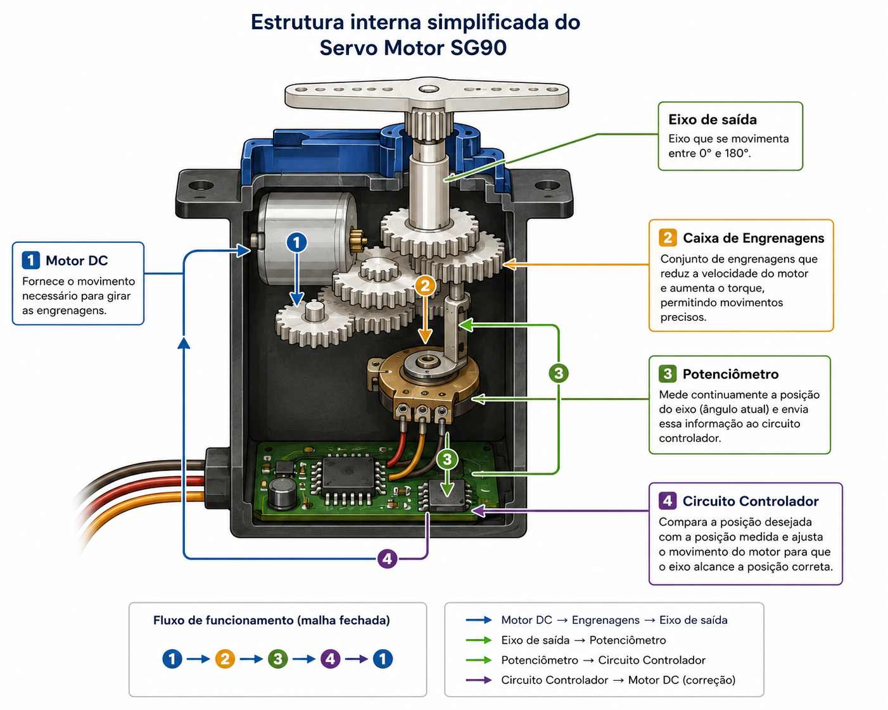
Figura 1: Funcionamento display.
Esquema e Montagem do Circuito
- Fio vermelho do servo → 5 V do Arduino;
- Fio marrom (ou preto) → GND;
- Fio laranja (ou amarelo) → pino digital 9.
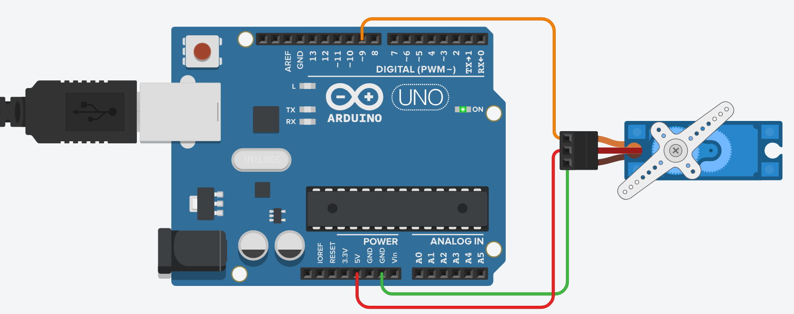
Código da Prática
Servo servo;
void setup() {
servo.attach(8);
}
void loop() {
servo.write(0);
delay(100);
servo.write(180);
delay(100);
}
🧪 Experimentando o código
- Altere o tempo do delay() para 500 ms e observe como o movimento se torna mais rápido.
- Acrescente uma nova posição de 45° entre 0° e 90°.
- Acrescente também a posição de 135° entre 90° e 180°.
- Modifique a sequência de movimentos para que o servo retorne de 180° até 0° passando pelas mesmas posições.
- Experimente utilizar outros ângulos, como 30°, 60°, 120° e 150°.
🏆 Desafio Prático
Desenvolva um programa que faça o servo motor funcionar como um limpador de para-brisa. Para isso, o eixo deverá: partir de 0° → movimentar-se continuamente até 180° → retornar novamente para 0° → repetir esse movimento indefinidamente. Como desafio adicional, tente tornar o movimento mais suave, movimentando o servo em pequenos incrementos ao invés de saltar diretamente entre as posições.
❓ Questões de Fixação
- Qual a principal diferença entre um servo motor e um motor DC convencional?
- Qual é a função da biblioteca Servo.h?
- Para que serve a função attach()?
- O que representa o valor informado na função write()?
- Quais são os três fios presentes em um servo motor SG90 e qual a função de cada um?
Módulo 4: Aplicação prática
Prática 9: Sonar Ultrassônico (Medição de Distância)
Robôs móveis precisam identificar obstáculos, cancelas automáticas detectam a aproximação de veículos e sistemas industriais monitoram a posição de objetos em esteiras transportadoras. Uma das formas mais simples e precisas de realizar essa medição é utilizando sensores ultrassônicos. Nesta prática será utilizado o sensor HC-SR04, um dispositivo capaz de medir a distância até um objeto utilizando ondas sonoras de alta frequência, imperceptíveis ao ouvido humano.
🎯 Objetivos & Competências
- Compreender o princípio de funcionamento do sensor ultrassônico HC-SR04;
- Entender como ocorre a medição de distância utilizando ondas sonoras;
- Identificar a função dos pinos Trigger (Trig) e Echo;
- Ler a distância medida utilizando o Arduino;
- Exibir os valores obtidos no Monitor Serial.
🧰 Materiais Necessários
- Placa Arduino Uno e Cabo USB;
- Sensor HC-SR04.
Conceitos Fundamentais
Emissor e receptor de ultrassom
O HC-SR04 é um sensor eletrônico desenvolvido para medir distâncias sem necessidade de contato físico com o objeto. Sua operação baseia-se na emissão de ondas ultrassônicas e na medição do tempo necessário para que essas ondas retornem após serem refletidas por um obstáculo. Esse método permite realizar medições com boa precisão em distâncias que variam, aproximadamente, entre 2 cm e 400 cm.
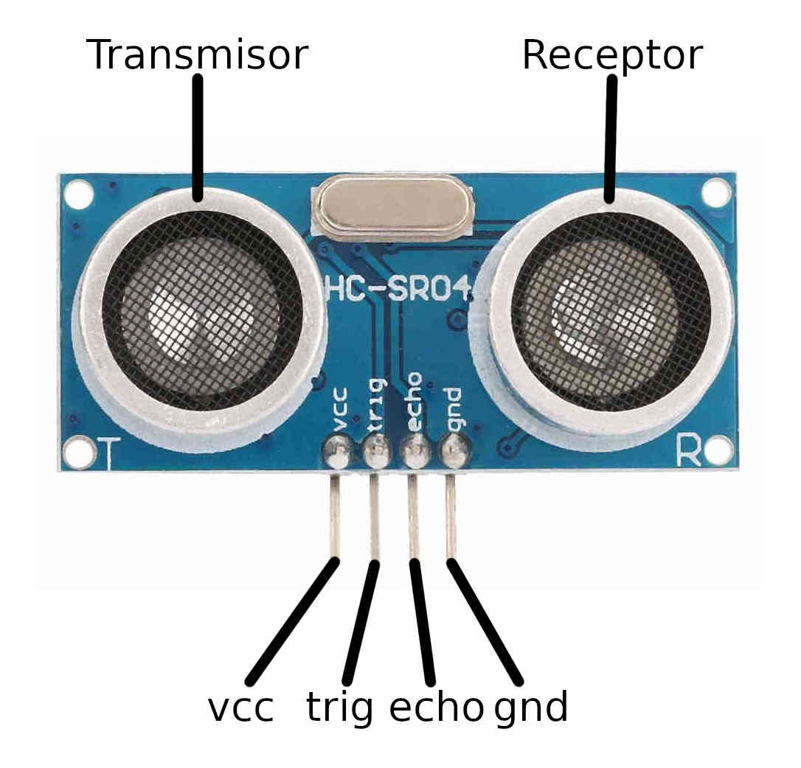
Figura 1: Funcionamento display.
Esquema e Montagem do Circuito
- VCC ou 5V → 5 V do Arduino;
- GND → GND;
- SIG → pino digital 7.
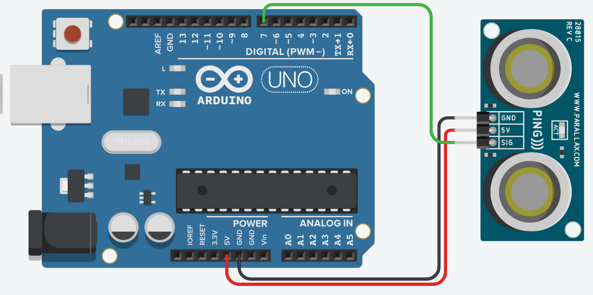
Código da Prática
long duracao;
float distancia;
void setup() {
Serial.begin(9600);
}
void loop() {
// Configura o pino como saida
pinMode(sensor, OUTPUT);
// Garante nivel baixo antes do pulso
digitalWrite(sensor, LOW);
delayMicroseconds(2);
// Envia o pulso de 5 µs
digitalWrite(sensor, HIGH);
delayMicroseconds(5);
digitalWrite(sensor, LOW);
// Agora o mesmo pino passa a ser entrada
pinMode(sensor, INPUT);
// Mede a duracao do eco
duracao = pulseIn(sensor, HIGH);
// Calcula a distancia em centimetros
distancia = duracao * 0.0343 / 2;
Serial.print("Distancia: ");
Serial.print(distancia);
Serial.println(" cm");
delay(500);
}
🧪 Experimentando o código
- Aproxime lentamente um objeto do sensor e observe como a distância varia.
- Afaste o objeto gradualmente e acompanhe as novas leituras.
- Experimente utilizar diferentes objetos, como um livro, uma caixa ou a própria mão.
- Modifique o tempo do comando delay() para 100 ms e observe como a atualização das medidas se torna mais rápida.
- Tente medir a distância até diferentes superfícies e compare os resultados obtidos.
🏆 Desafio Prático
Modifique o programa para que o Arduino informe, por meio do Monitor Serial, em qual das seguintes situações o objeto se encontra: muito próximo (até 10 cm); próximo (entre 10 cm e 30 cm); distante (acima de 30 cm). Utilize estruturas condicionais (if e else) para exibir uma mensagem diferente para cada situação.
❓ Questões de Fixação
- Qual é o princípio de funcionamento do sensor ultrassônico?
- O que representa o pulso enviado pelo pino de sinal do sensor?
- Qual é a função da instrução pulseIn()?
- Por que a distância calculada é dividida por dois?
- Qual é a função do Monitor Serial nesta prática?
Prática 10: Estacionamento Inteligente (sinalização de vagas)
Em estacionamentos de shoppings, aeroportos, universidades e centros logísticos, é comum encontrar sistemas luminosos que indicam quais vagas estão livres e quais estão ocupadas. Esses sistemas auxiliam os motoristas na localização de vagas disponíveis, reduzem o tempo de procura e contribuem para um melhor fluxo de veículos. Nesta prática será desenvolvido um sistema simplificado de sinalização de vagas utilizando um sensor ultrassônico e dois LEDs.
🎯 Objetivos & Competências
- Integrar sensores e atuadores em um único projeto;
- Utilizar o sensor ultrassônico para detectar a presença de um veículo;
- Controlar LEDs por meio de estruturas condicionais;
- Simular o funcionamento de um sistema inteligente de sinalização de vagas;
- Compreender uma aplicação prática da automação em estacionamentos.
🧰 Materiais Necessários
- Arduino Uno;
- Sensor HC-SR04;
- LED verde;
- LED vermelho;
- 2x resistores de 220 Ω;
- Cabos jumper;
- Protoboard;
- Cabo USB.
Conceitos Fundamentais
Sinalizador de vagas
O Arduino realiza leituras contínuas da distância medida pelo sensor ultrassônico. Quando um objeto é detectado a uma distância inferior ao limite estabelecido no programa, o sistema interpreta que existe um veículo ocupando a vaga. Nesse caso, o LED vermelho é aceso e o LED verde é apagado. Quando nenhum objeto é detectado dentro da distância configurada, o LED verde permanece aceso, indicando que a vaga está disponível para estacionamento.
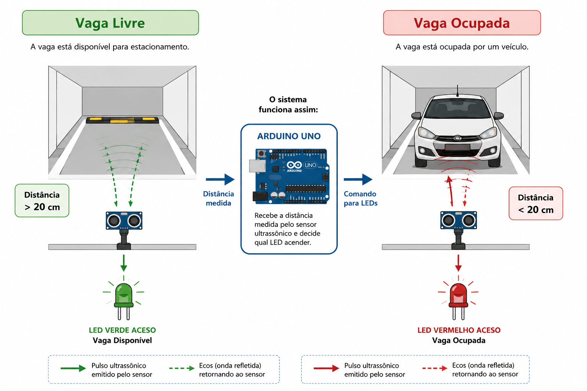
Figura 1: Funcionamento display.
Esquema e Montagem do Circuito
- VCC ou 5V → 5 V do Arduino;
- GND → GND;
- SIG → pino digital 7;
- LED Verde → pino digital 8;
- LED Vermelho → pino digital 9;
- Cátodos → resistor 220 Ω.
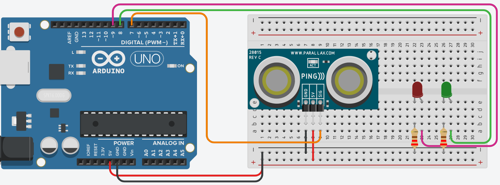
Código da Prática
const int ledVerde = 8;
const int ledVermelho = 9;
long duracao;
float distancia;
void setup() {
pinMode(ledVerde, OUTPUT);
pinMode(ledVermelho, OUTPUT);
Serial.begin(9600);
}
void loop() {
pinMode(sensor, OUTPUT);
digitalWrite(sensor, LOW);
delayMicroseconds(2);
digitalWrite(sensor, HIGH);
delayMicroseconds(5);
digitalWrite(sensor, LOW);
pinMode(sensor, INPUT);
duracao = pulseIn(sensor, HIGH);
distancia = duracao * 0.0343 / 2;
Serial.print("Distancia: ");
Serial.print(distancia);
Serial.println(" cm");
if (distancia <= 20) {
digitalWrite(ledVerde, LOW);
digitalWrite(ledVermelho, HIGH);
}
else {
digitalWrite(ledVerde, HIGH);
digitalWrite(ledVermelho, LOW);
}
delay(500);
}
🧪 Experimentando o código
- Altere a distância limite de 20 cm para 15 cm.
- Altere a distância limite para 30 cm.
- Observe como essas modificações influenciam o momento em que os LEDs mudam de estado.
- Troque as funções dos LEDs para que o verde indique vaga ocupada e o vermelho indique vaga livre.
- Utilize o Monitor Serial para acompanhar os valores medidos durante os testes.
🏆 Desafio Prático
Modifique o programa para criar um sistema com três estados de ocupação. Utilize três LEDs para representar as seguintes situações: LED verde: vaga livre (distância maior que 40 cm); LED amarelo: veículo se aproximando (distância entre 20 cm e 40 cm); LED vermelho: vaga ocupada (distância menor ou igual a 20 cm). Para resolver esse desafio, utilize a estrutura if, else if e else.
❓ Questões de Fixação
- Qual é a função do sensor ultrassônico neste sistema?
- Qual é a função dos LEDs?
- Como o Arduino decide qual LED deverá permanecer aceso?
- Qual estrutura de programação foi utilizada para tomar essa decisão?
- O que aconteceria se a distância limite fosse reduzida para 10 cm?
Prática 11: Cancela Automática (Controle de Acesso)
O controle de acesso de veículos é uma atividade presente em diversos ambientes, como estacionamentos, condomínios, universidades, centros de distribuição e indústrias. Esses sistemas normalmente utilizam sensores para detectar a aproximação de um veículo e atuadores responsáveis por movimentar a cancela. Nesta prática será desenvolvido um sistema simplificado de controle de acesso utilizando um sensor ultrassônico para detectar a presença de um veículo e um servo motor para simular a abertura e o fechamento da cancela.
🎯 Objetivos & Competências
- Integrar sensores e atuadores em um único sistema automatizado;
- Utilizar um sensor ultrassônico para detectar a aproximação de veículos;
- Controlar um servo motor para simular a abertura e o fechamento de uma cancela;
- Aplicar estruturas condicionais na tomada de decisões;
- Compreender o funcionamento básico de sistemas de controle de acesso utilizados em centros logísticos e estacionamentos.
🧰 Materiais Necessários
- Arduino Uno;
- Sensor HC-SR04;
- LED verde;
- Servo motor SG90;
- LED vermelho;
- 2x resistores de 220 Ω;
- Cabos jumper;
- Protoboard;
- Cabo USB.
Conceitos Fundamentais
Sensor de liberação de passagem
Inicialmente, um sensor detecta a aproximação de um veículo. Em seguida, um controlador eletrônico analisa essa informação e decide se a passagem deve ou não ser liberada. Caso o acesso seja permitido, um atuador movimenta a cancela, liberando a passagem do veículo. Após a travessia, a cancela retorna automaticamente à posição inicial, preparando o sistema para uma nova operação.
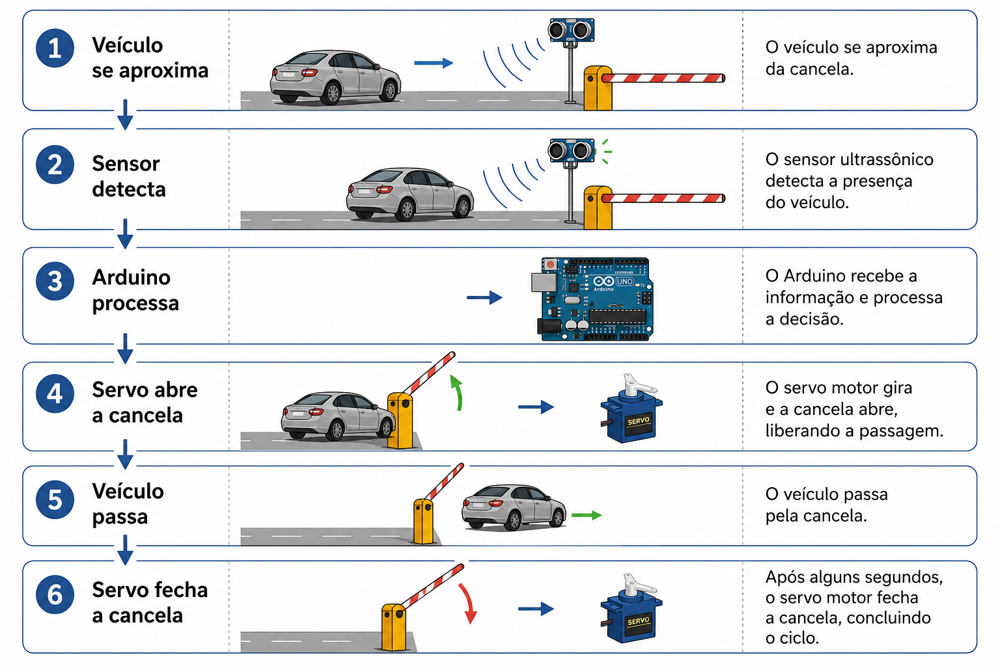
Figura 1: Funcionamento display.
Esquema e Montagem do Circuito
- VCC ou 5V → 5 V do Arduino;
- GND → GND;
- SIG → pino digital 7;
- LED Verde → pino digital 8;
- Servo Motor → pino digital 9
- LED Vermelho → pino digital 10;
- Cátodos → resistor 220 Ω.
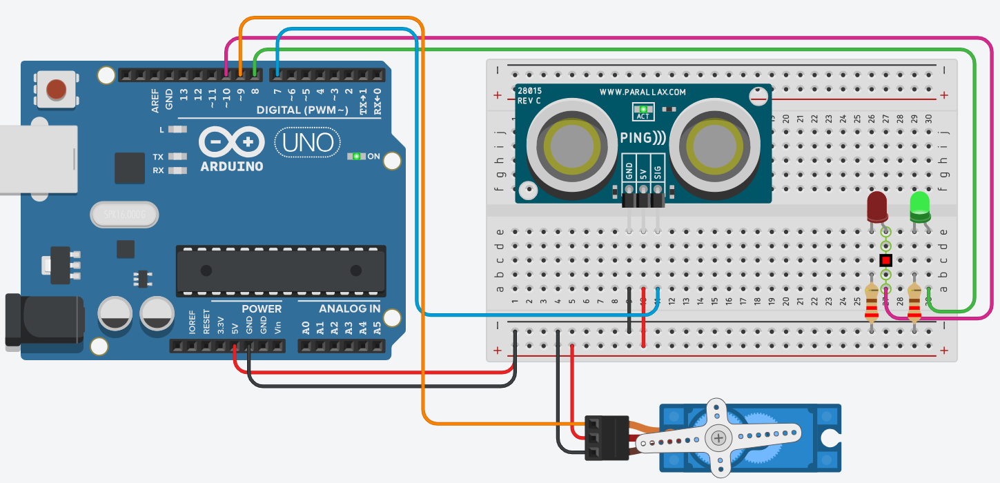
Código da Prática
Servo cancela;
const int sensor = 7;
const int ledVerde = 8;
const int ledVermelho = 10;
long duracao;
float distancia;
void setup() {
cancela.attach(9);
pinMode(ledVerde, OUTPUT);
pinMode(ledVermelho, OUTPUT);
digitalWrite(ledVerde, HIGH);
digitalWrite(ledVermelho, LOW);
cancela.write(0);
Serial.begin(9600);
}
void loop() {
pinMode(sensor, OUTPUT);
digitalWrite(sensor, LOW);
delayMicroseconds(2);
digitalWrite(sensor, HIGH);
delayMicroseconds(5);
digitalWrite(sensor, LOW);
pinMode(sensor, INPUT);
duracao = pulseIn(sensor, HIGH);
distancia = duracao * 0.0343 / 2;
Serial.print("Distancia: ");
Serial.print(distancia);
Serial.println(" cm");
if (distancia <= 20) {
digitalWrite(ledVerde, LOW);
digitalWrite(ledVermelho, HIGH);
cancela.write(180);
delay(3000);
cancela.write(0);
digitalWrite(ledVerde, HIGH);
digitalWrite(ledVermelho, LOW);
}
delay(300);
}
🧪 Experimentando o código
- Altere a distância de detecção de 20 cm para 10 cm e observe quando a cancela passa a abrir.
- Modifique a distância para 30 cm e compare o comportamento do sistema.
- Altere o tempo de abertura da cancela, modificando o valor do comando delay(3000).
- Observe como o servo motor responde quando um objeto é aproximado rapidamente do sensor.
- Utilize o Monitor Serial para acompanhar os valores de distância durante os testes.
🏆 Desafio Prático
Modifique o programa para que a cancela permaneça aberta enquanto o veículo estiver sendo detectado pelo sensor ultrassônico. A cancela deverá fechar apenas quando o veículo se afastar e a distância medida voltar a ser superior ao limite estabelecido. Esse comportamento é semelhante ao utilizado em cancelas automáticas reais, aumentando a segurança do sistema e evitando o fechamento durante a passagem do veículo.
❓ Questões de Fixação
- Qual componente é responsável por detectar a aproximação do veículo?
- Qual componente simula o movimento da cancela?
- Qual é a função dos LEDs verde e vermelho neste projeto?
- O que acontece quando a distância medida pelo sensor é menor que 20 cm?
- Qual estrutura condicional foi utilizada para controlar o funcionamento da cancela?
Prática 12: Iluminação eficiente (automação por presença e luminosidade)
A iluminação representa uma parcela significativa do consumo de energia elétrica em galpões, armazéns e centros de distribuição. Para reduzir esse consumo, muitos sistemas modernos utilizam sensores capazes de monitorar continuamente a luminosidade do ambiente, ajustando automaticamente a intensidade das luminárias de acordo com a necessidade.Nesta prática será desenvolvido um sistema simplificado de iluminação inteligente utilizando um sensor LDR e um LED controlado por PWM. Conforme a luminosidade do ambiente varia, o brilho do LED será ajustado automaticamente pelo Arduino.
🎯 Objetivos & Competências
- Desenvolver um sistema simplificado de iluminação inteligente integrado ao Arduino Uno;
- Monitorar a luminosidade de um ambiente realizando a leitura analógica de um sensor LDR;
- Detectar a presença e a movimentação de pessoas utilizando a leitura digital de um sensor infravermelho passivo (PIR);
- Ajustar e controlar a intensidade luminosa de um LED utilizando o conceito de Modulação por Largura de Pulso (PWM);
- Aplicar o operador lógico "E" (&&) em estruturas condicionais para que a iluminação seja acionada apenas quando o ambiente estiver escuro e houver movimento simultaneamente.
🧰 Materiais Necessários
- Arduino Uno;
- Sensor HC-SR04;
- Sensor LDR;
- Servo motor SG90;
- LED;
- Resistor de 220 Ω;
- Resistor de 10 kΩ;
- Cabos jumper;
- Protoboard;
- Cabo USB.
Conceitos Fundamentais
Sensor de detecção de movimento
Quando uma pessoa atravessa sua área de detecção, ocorre uma mudança na radiação infravermelha recebida pelo sensor, que envia um sinal digital ao Arduino indicando a presença de movimento. Diferentemente do sensor ultrassônico, o PIR não mede distância. Sua função é apenas informar se houve ou não movimentação dentro de sua área de alcance.
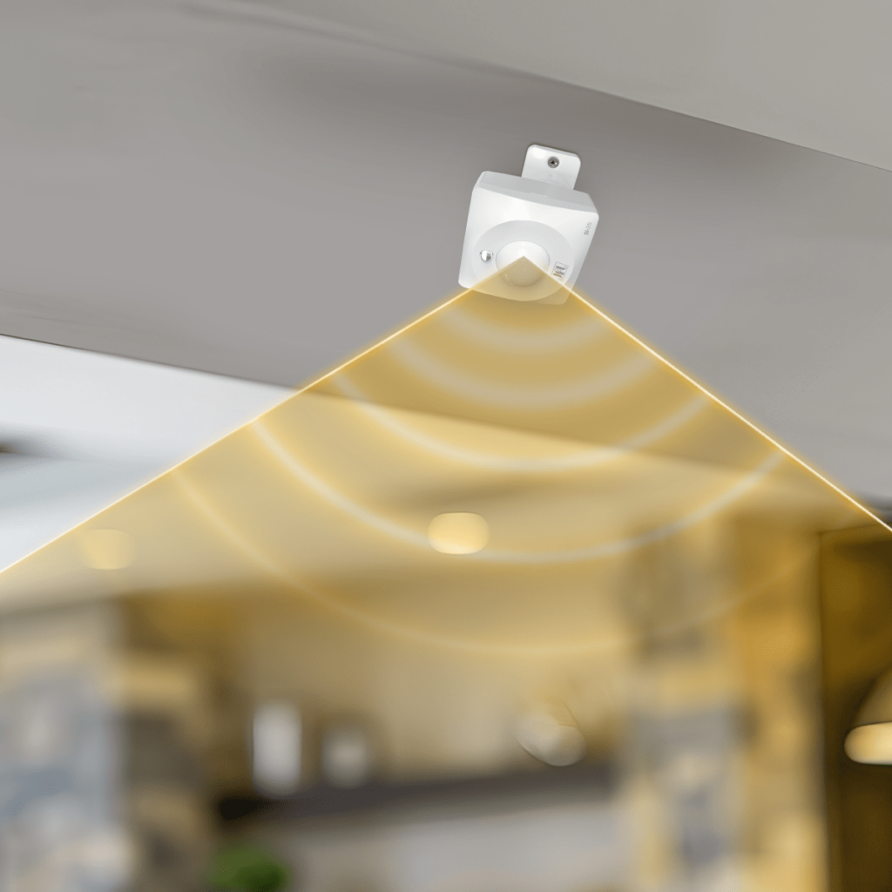
Figura 1: Funcionamento display.
Esquema e Montagem do Circuito
- (PIR) VCC ou 5V → 5 V do Arduino;
- (PIR) GND → GND;
- LDR → A0
- (PIR) OUT → pino digital 7
- Anôdo → pino PWM 9
- Cátodo → GND via resistor 220Ω
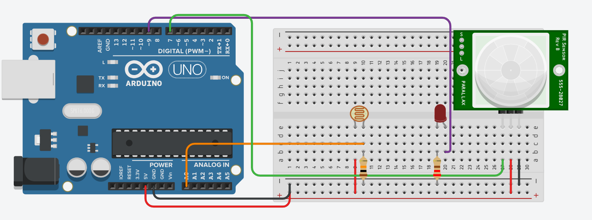
Código da Prática
const int PIR = 7;
const int LED = 9;
int luminosidade;
int brilho;
int movimento;
void setup() {
Serial.begin(9600);
pinMode(PIR, INPUT);
pinMode(LED, OUTPUT);
}
void loop() {
luminosidade = analogRead(LDR);
movimento = digitalRead(PIR);
brilho = map(luminosidade, 0, 1023, 255, 0);
if (luminosidade < 500 && movimento == HIGH) {
analogWrite(LED, brilho);
}
else {
analogWrite(LED, 0);
}
Serial.print("Luminosidade: ");
Serial.print(luminosidade);
Serial.print(" | Movimento: ");
if (movimento == HIGH)
Serial.print("SIM");
else
Serial.print("NAO");
Serial.print(" | Brilho: ");
Serial.println(brilho);
delay(200);
}
🧪 Experimentando o código
- Ilumine o sensor LDR e observe que o LED permanece apagado, mesmo movimentando a mão em frente ao sensor PIR.
- Cubra o sensor LDR para simular um ambiente escuro e, em seguida, movimente a mão em frente ao sensor PIR.
- Altere o valor limite da luminosidade (500) e observe como isso modifica o momento em que a iluminação é acionada.
- Modifique a intensidade máxima do LED alterando os valores utilizados na função map().
- Utilize o Monitor Serial para acompanhar simultaneamente os valores fornecidos pelos dois sensores.
🏆 Desafio Prático
Modifique o programa para que o LED permaneça aceso durante 10 segundos após a última movimentação detectada pelo sensor PIR. Caso um novo movimento seja identificado durante esse intervalo, a contagem deverá ser reiniciada. Esse comportamento é amplamente utilizado em corredores, estacionamentos, banheiros, almoxarifados e centros de distribuição, proporcionando maior conforto aos usuários e reduzindo o consumo de energia.
❓ Questões de Fixação
- Qual é a função do sensor LDR neste projeto?
- Qual é a função do sensor PIR?
- Em quais situações o LED permanecerá apagado?
- Qual operador lógico foi utilizado para combinar as duas condições do programa?
Módulo 5: Automação logística e segurança
Prática 13: Monitoramento Térmico (Controle em Armazéns)
Diversos produtos armazenados em centros de distribuição exigem condições ambientais controladas para preservar sua qualidade. Alimentos, medicamentos, produtos químicos e equipamentos eletrônicos podem sofrer danos quando expostos a temperaturas elevadas ou níveis inadequados de umidade. Por esse motivo, muitos armazéns utilizam sistemas automáticos capazes de monitorar continuamente essas variáveis, permitindo que os responsáveis identifiquem rapidamente qualquer alteração nas condições do ambiente. Nesta prática será desenvolvido um sistema de monitoramento de temperatura utilizando um sensor TMP36 e um display LCD com interface I²C. O Arduino realizará a leitura da temperatura e da umidade do ambiente, exibindo essas informações em tempo real no display.
🎯 Objetivos & Competências
- Compreender o funcionamento do sensor TMP36;
- Medir temperatura do ambiente;
- Exibir informações em um display LCD com interface I²C;
- Desenvolver um sistema de monitoramento ambiental;
- Relacionar o monitoramento de temperatura com aplicações em logística e armazenagem.
🧰 Materiais Necessários
- Placa Arduino Uno e Cabo USB;
- Sensor TMP36;
- Display LCD 16×2 com interface I²C;
- LED verde;
- LED vermelho;
- 2x resistores de 220 Ω;
- Protoboard;
- Cabos Jumpers.
Conceitos Fundamentais
Medidor de temperaturas
O TMP36 é um sensor analógico utilizado para medir a temperatura do ambiente. Seu funcionamento baseia-se na geração de uma tensão elétrica proporcional à temperatura medida. À medida que a temperatura aumenta ou diminui, a tensão de saída do sensor também varia.Essa tensão é enviada ao Arduino por meio do terminal de saída (VOUT), onde é convertida em um valor digital pela função analogRead(). Em seguida, o programa utiliza uma equação matemática para calcular a temperatura correspondente e apresentar o resultado ao usuário.
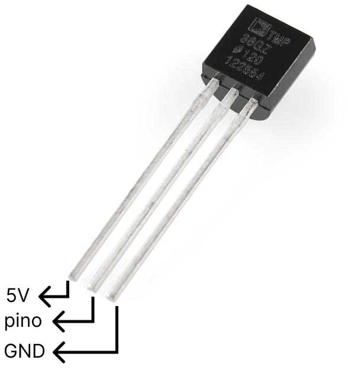
Figura 1: Funcionamento.
Esquema e Montagem do Circuito
| Componente | Conexão |
|---|---|
| TMP36 (VCC) | 5 V |
| TMP36 (VOUT) | A0 |
| TMP36 (GND) | GND |
| LCD I²C (VCC) | 5 V |
| LCD I²C (GND) | GND |
| LCD I²C (SDA) | SDA (A4) |
| LCD I²C (SCL) | SCL (A5) |
| LED Verde (ânodo) | Pino 8 |
| LED Verde (cátodo) | GND (via resistor de 220 Ω) |
| LED Vermelho (ânodo) | Pino 9 |
| LED Vermelho (cátodo) | GND (via resistor de 220 Ω) |
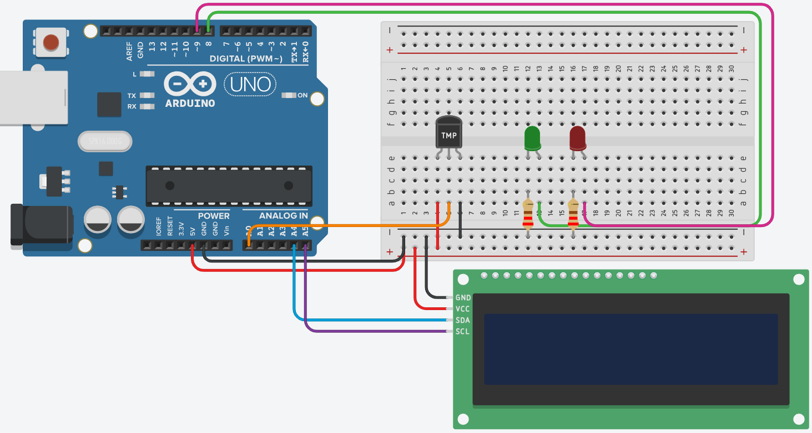
Código da Prática
#include <LiquidCrystal_I2C.h>
LiquidCrystal_I2C lcd(0x27, 16, 2);
const int TMP = A0;
const int ledVerde = 8;
const int ledVermelho = 9;
int leitura;
float tensao;
float temperatura;
void setup() {
lcd.init();
lcd.backlight();
pinMode(ledVerde, OUTPUT);
pinMode(ledVermelho, OUTPUT);
Serial.begin(9600);
}
void loop() {
leitura = analogRead(TMP);
tensao = leitura * (5.0 / 1023.0);
temperatura = (tensao - 0.5) * 100.0;
lcd.clear();
lcd.setCursor(0, 0);
lcd.print("Temp:");
lcd.print(temperatura, 1);
lcd.print((char)223);
lcd.print("C");
lcd.setCursor(0, 1);
if (temperatura < 30) {
lcd.print("Status: OK");
digitalWrite(ledVerde, HIGH);
digitalWrite(ledVermelho, LOW);
}
else {
lcd.print("Status: ALERTA");
digitalWrite(ledVerde, LOW);
digitalWrite(ledVermelho, HIGH);
}
Serial.print("Temperatura: ");
Serial.println(temperatura);
delay(1000);
}
🧪 Experimentando o código
- Altere a temperatura do sensor TMP36 no simulador Tinkercad e observe a atualização dos valores no display LCD.
- Ajuste a temperatura para valores inferiores a 30 °C e verifique se o LED verde permanece aceso.
- Aumente gradativamente a temperatura até ultrapassar 30 °C e observe o acionamento do LED vermelho.
- Modifique o valor limite utilizado na estrutura condicional e analise como isso altera o funcionamento do sistema.
- Acompanhe simultaneamente as informações exibidas no Monitor Serial e no display LCD.
🏆 Desafio Prático
Neste projeto, o sistema apenas informa se a temperatura está dentro ou fora da faixa estabelecida. Modifique o programa para criar três níveis de monitoramento: temperatura inferior a 20 °C: ambiente frio; temperatura entre 20 °C e 30 °C: ambiente adequado; temperatura superior a 30 °C: ambiente quente. Atualize a mensagem exibida no display LCD para indicar a condição correspondente e faça os LEDs representarem visualmente cada situação.
❓ Questões de Fixação
- Qual é a função do sensor TMP36?
- Qual é a principal diferença entre um sensor analógico, como o TMP36, e um sensor digital?
- Por que foi necessário utilizar variáveis do tipo float neste programa?
- Qual é a finalidade da função analogRead()?
- Explique por que foi necessário converter a leitura analógica em temperatura.
Prática 14: Acesso seguro (controle por senha)
Em centros de distribuição, almoxarifados e áreas industriais, nem todos os ambientes podem ser acessados livremente. Locais que armazenam produtos de alto valor, equipamentos ou materiais perigosos normalmente possuem sistemas de controle de acesso para permitir a entrada apenas de pessoas autorizadas. Nesta prática será desenvolvido um sistema simplificado de controle de acesso utilizando um teclado matricial, um display LCD e um servo motor.
🎯 Objetivos & Competências
- Compreender o funcionamento de um teclado matricial 4×4;
- Capturar informações digitadas pelo usuário;
- Comparar uma senha digitada com uma senha previamente cadastrada;
- Controlar um servo motor para simular a abertura de uma porta;
- Exibir mensagens de acesso no display LCD.
🧰 Materiais Necessários
- Arduino Uno;
- Teclado matricial 4×4;
- Display LCD 16×2 com interface I²C;
- Servo motor SG90;
- LED verde;
- LED vermelho;
- Dois resistores de 220 Ω;
- Protoboard;
- Cabos Jumper.
Conceitos Fundamentais
Teclado matricial
O teclado matricial é um dispositivo de entrada utilizado para enviar informações ao Arduino por meio do pressionamento de teclas.Internamente, suas teclas são organizadas em linhas e colunas. Quando uma tecla é pressionada, ocorre a conexão entre uma linha e uma coluna específicas. O Arduino identifica essa combinação e determina qual tecla foi acionada. Essa organização permite utilizar um grande número de teclas com uma quantidade reduzida de pinos digitais.
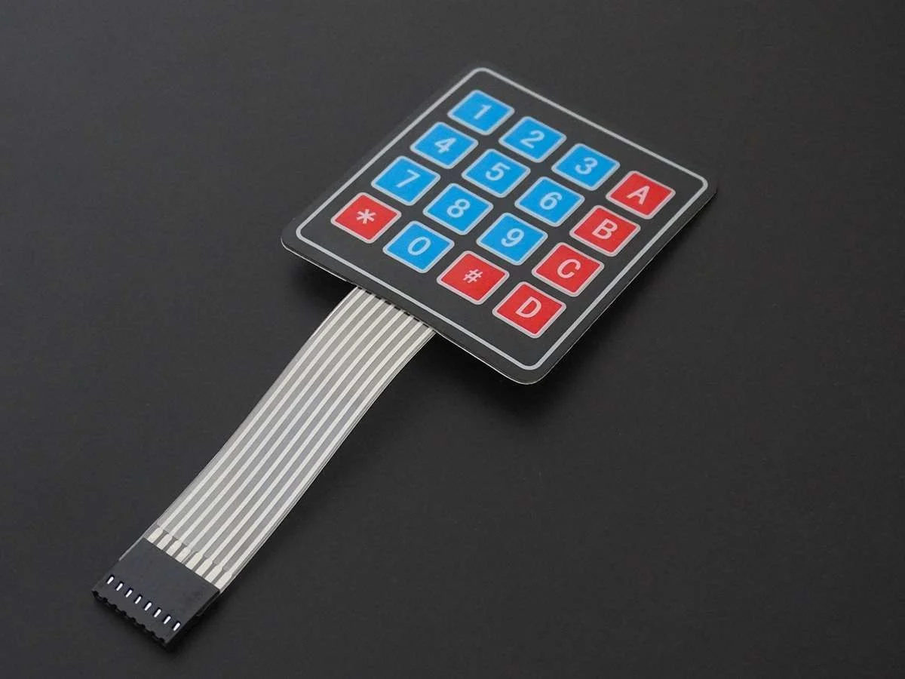
Figura 1: Funcionamento teclado.
Esquema e Montagem do Circuito
| Componente | Conexão |
|---|---|
| LCD SDA | A4 |
| LCD SCL | A5 |
| LCD VCC | 5V |
| LCD GND | GND |
| Servo (Sinal) | Pino 10 |
| Servo (5V) | 5V |
| Servo (GND) | GND |
| LED Verde | Pino 11 |
| LED Vermelho | Pino 12 |
| Teclado Pino 1 | D2 |
| Teclado Pino 2 | D3 |
| Teclado Pino 3 | D4 |
| Teclado Pino 4 | D5 |
| Teclado Pino 5 | D6 |
| Teclado Pino 6 | D7 |
| Teclado Pino 7 | D8 |
| Teclado Pino 8 | D9 |
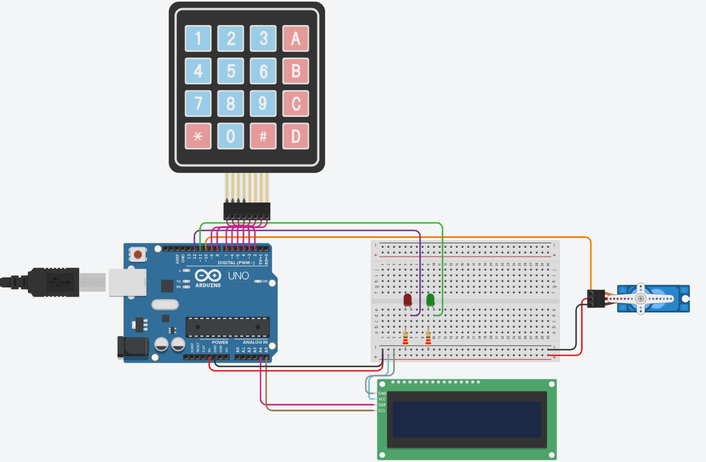
Código da Prática
#include <LiquidCrystal_I2C.h>
#include <Servo.h>
#include <Keypad.h>
LiquidCrystal_I2C lcd(0x27, 16, 2);
Servo porta;
const byte LINHAS = 4;
const byte COLUNAS = 4;
char teclas[LINHAS][COLUNAS] = {
{'1', '2', '3', 'A'},
{'4', '5', '6', 'B'},
{'7', '8', '9', 'C'},
{'*', '0', '#', 'D'}
};
byte pinosLinhas[LINHAS] = {2, 3, 4, 5};
byte pinosColunas[COLUNAS] = {6, 7, 8, 9};
Keypad teclado = Keypad(
makeKeymap(teclas),
pinosLinhas,
pinosColunas,
LINHAS,
COLUNAS
);
const int ledVerde = 11;
const int ledVermelho = 12;
String senha = "1234";
String digitada = "";
void setup() {
porta.attach(10);
pinMode(ledVerde, OUTPUT);
pinMode(ledVermelho, OUTPUT);
lcd.init();
lcd.backlight();
porta.write(0);
digitalWrite(ledVerde, LOW);
digitalWrite(ledVermelho, HIGH);
lcd.print("Digite a");
lcd.setCursor(0, 1);
lcd.print("senha");
}
void loop() {
char tecla = teclado.getKey();
if (tecla) {
if (tecla == '#') {
verificarSenha();
}
else if (tecla == '*') {
digitada = "";
lcd.clear();
lcd.print("Digite a");
lcd.setCursor(0, 1);
lcd.print("senha");
}
else {
digitada += tecla;
lcd.setCursor(digitada.length() - 1, 1);
lcd.print("*");
}
}
}
void verificarSenha() {
lcd.clear();
if (digitada == senha) {
lcd.print("Acesso");
lcd.setCursor(0, 1);
lcd.print("Liberado");
digitalWrite(ledVerde, HIGH);
digitalWrite(ledVermelho, LOW);
porta.write(90);
delay(3000);
porta.write(0);
digitalWrite(ledVerde, LOW);
digitalWrite(ledVermelho, HIGH);
}
else {
lcd.print("Acesso");
lcd.setCursor(0, 1);
lcd.print("Negado");
digitalWrite(ledVerde, LOW);
digitalWrite(ledVermelho, HIGH);
delay(2000);
}
digitada = "";
lcd.clear();
lcd.print("Digite a");
lcd.setCursor(0, 1);
lcd.print("senha");
}
🧪 Experimentando o código
- Altere a senha para um conjunto de 4 digitos;
- Altere o tempo de abertura da cancela;
- Altere o angulo de abertura;
- Troque as as mensagens exibidas no display.
🏆 Desafio Prático
Modifique o programa para que, após três tentativas consecutivas de senha incorreta, o sistema bloqueie novos acessos por 10 segundos, exibindo no display a mensagem "Sistema Bloqueado".
❓ Questões de Fixação
- Qual é aprincipal função do teclado matricial no sistema desenvolvido nesta prática?
- O que acontece quando o usuário digita uma senha incorreta?
- Qual componente é responsável por simular a abertura e o fechamento da porta?
- Explique a função do display LCD no sistema de controle de acesso.
- Qual é a finalidade dos LEDs verde e vermelho durante o funcionamento do sistema?
Prática 15: Almoxarifado Integrado (controle por senha)
Em um almoxarifado moderno, diversas informações precisam ser monitoradas continuamente para garantir a segurança dos materiais, o controle do estoque e o bom funcionamento das operações. A automação desses processos reduz falhas humanas, aumenta a eficiência e permite que situações de risco sejam identificadas rapidamente. Nesta prática será desenvolvido um sistema integrado de monitoramento utilizando o Arduino Uno. O projeto reunirá diversos componentes estudados ao longo desta apostila, como o sensor ultrassônico, o sensor de temperatura TMP36, o display LCD, o servo motor e os LEDs indicadores.
🎯 Objetivos & Competências
- Integrar diferentes sensores e atuadores em um único sistema;
- Monitorar simultaneamente temperatura e presença de objetos;
- Utilizar sinais visuais e sonoros para indicar diferentes condições de operação;
- Exibir informações em tempo real no display LCD;
- Desenvolver um projeto completo de automação aplicado à área de logística.
🧰 Materiais Necessários
- Arduino Uno;
- Sensor ultrassônico HC-SR04;
- Sensor de temperatura TMP36;
- Display LCD 16×2 com interface I²C;
- LED verde;
- LED vermelho;
- Buzzer ativo;
- 2x resistores de 220 Ω;
- Protoboard;
- Cabos jumper;
- Cabo USB.
Conceitos Fundamentais
Visão Geral
O sistema permanece em funcionamento contínuo, realizando o monitoramento do ambiente do almoxarifado. Inicialmente, o sensor ultrassônico verifica se existe algum objeto posicionado na área monitorada, simulando a presença de materiais armazenados ou de um veículo em uma região específica. Ao mesmo tempo, o sensor de temperatura TMP36 mede continuamente a temperatura do ambiente, permitindo identificar situações que possam representar riscos para os materiais armazenados. O Arduino recebe as informações fornecidas pelos sensores, processa os dados e toma decisões de acordo com as condições encontradas. O display LCD apresenta ao operador mensagens sobre o estado atual do sistema, enquanto os LEDs indicam visualmente se a situação é considerada normal ou requer atenção. Caso a temperatura ultrapasse o limite estabelecido no programa, um buzzer é acionado para emitir um alerta sonoro, chamando a atenção do operador para a necessidade de verificar o ambiente. Dessa forma, o sistema integra monitoramento, sinalização visual e alerta sonoro, simulando uma aplicação de automação semelhante às utilizadas em depósitos, centros de distribuição e almoxarifados industriais.
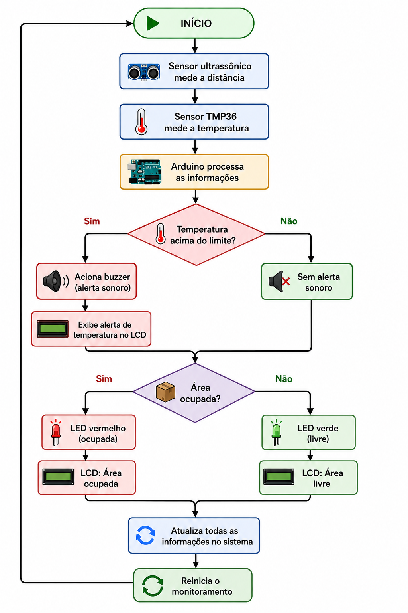
Figura 1: Funcionamento sistema.
Esquema e Montagem do Circuito
| Componente | Conexão no Arduino |
|---|---|
| HC-SR04 VCC | 5 V |
| HC-SR04 GND | GND |
| HC-SR04 SIG | Pino digital 7 |
| TMP36 VCC | 5 V |
| TMP36 VOUT | A0 |
| TMP36 GND | GND |
| LCD SDA | A4 |
| LCD SCL | A5 |
| LCD VCC | 5 V |
| LCD GND | GND |
| LED Verde | Pino digital 11 |
| LED Vermelho | Pino digital 12 |
| Buzzer (+) | Pino digital 10 |
| Buzzer (-) | GND |
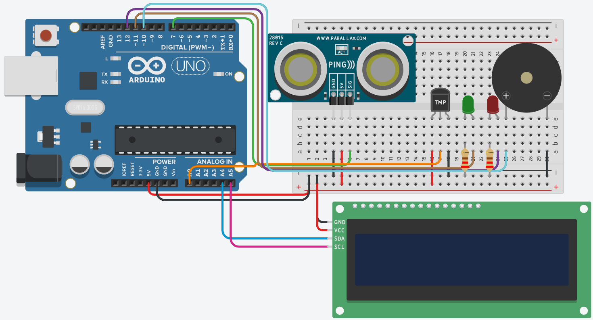
Código da Prática
#include <LiquidCrystal_I2C.h>
LiquidCrystal_I2C lcd(0x27, 16, 2);
// HC-SR04 (modelo de 3 pinos do Tinkercad)
const int sensor = 7;
// TMP36
const int tmp = A0;
// LEDs
const int ledVerde = 11;
const int ledVermelho = 12;
// Buzzer
const int buzzer = 10;
float temperatura;
long duracao;
float distancia;
void setup() {
pinMode(sensor, OUTPUT);
pinMode(ledVerde, OUTPUT);
pinMode(ledVermelho, OUTPUT);
pinMode(buzzer, OUTPUT);
lcd.init();
lcd.backlight();
}
void loop() {
// --------- Leitura do sensor ultrassônico ---------
pinMode(sensor, OUTPUT);
digitalWrite(sensor, LOW);
delayMicroseconds(2);
digitalWrite(sensor, HIGH);
delayMicroseconds(5);
digitalWrite(sensor, LOW);
pinMode(sensor, INPUT);
duracao = pulseIn(sensor, HIGH);
distancia = duracao / 58.0;
// --------- Leitura do TMP36 ---------
int leitura = analogRead(tmp);
float tensao = leitura * 5.0 / 1023.0;
temperatura = (tensao - 0.5) * 100.0;
// --------- Temperatura ---------
if (temperatura > 30) {
tone(buzzer, 1000);
}
else {
noTone(buzzer);
}
// --------- Ocupação ---------
lcd.clear();
if (distancia < 20) {
digitalWrite(ledVerde, LOW);
digitalWrite(ledVermelho, HIGH);
lcd.setCursor(0, 0);
lcd.print("Area Ocupada");
}
else {
digitalWrite(ledVerde, HIGH);
digitalWrite(ledVermelho, LOW);
lcd.setCursor(0, 0);
lcd.print("Area Livre");
}
lcd.setCursor(0, 1);
lcd.print(temperatura, 1);
lcd.print((char)223);
lcd.print("C");
delay(500);
}
🧪 Experimentando o código
- Altere o limite de temperatura para >25 e, em seguida, para >35;
- Modifique a distância de detecção;
- Modifique a mensagem exibida no display;
- Modifique a frequência do buzzer.
🏆 Desafio Prático
Agora é sua vez de tornar o sistema ainda mais inteligente. Modifique o programa para que ele apresente quatro situações diferentes:
Situações
| Temperatura | Área | Comportamento esperado |
|---|---|---|
| Normal | Livre | LED verde aceso |
| Normal | Ocupado | LED vermelho aceso |
| Alta | Livre | LED verde + buzzer |
| Alta | Ocupada | LED vermelho + buzzer |
Como melhoria adicional, faça o display LCD informar simultaneamente a situação da área e a condição da temperatura. Por exemplo: "Área Livre Temp. Normal" ou "Área Ocupada Temp. Alta".
❓ Questões de Fixação
- Qual é a função desempenhada pelo sensor ultrassônico neste projeto?
- Para que serve o sensor TMP36 e como ele contribui para o monitoramento do ambiente?
- Em quais situações o buzzer é acionado pelo programa?
- Explique a função dos LEDs verde e vermelho no sistema desenvolvido.
- Qual é a importância do display LCD durante o funcionamento do sistema?